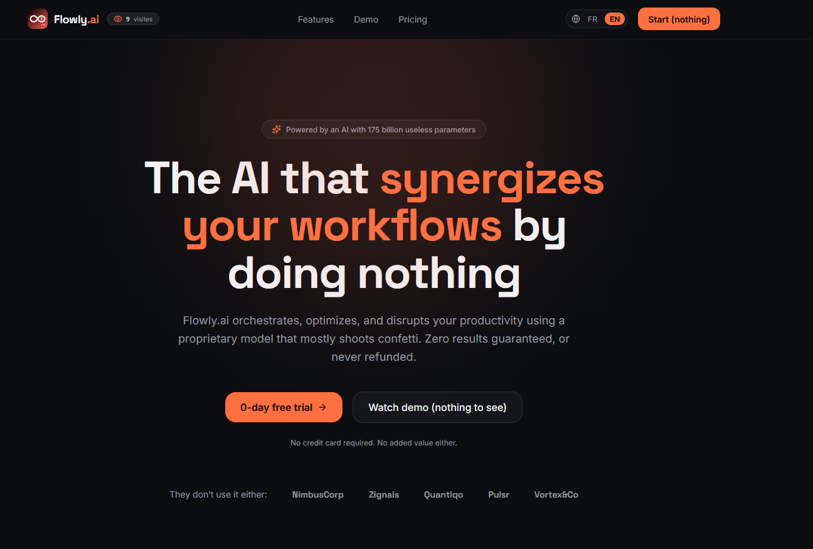

Flowly.ai
Flowly.ai — l’OS du travail moderne.
Un “outil de productivité” qui promet clarté, focus et simplification totale des workflows… mais fonctionne d’une façon radicalement différente.
Centralisation de l’information
Vue unifiée sur projets, tâches et décisions
Réduction du bruit et des notifications inutiles
Alignement équipe / objectifs / priorités
Pensé pour remote, async et équipes distribuées
Starter / Growth / Enterprise
Si tu cherches “moins de chaos” dans ton travail, Flowly mérite au moins un clic.
Liens directs
Captures d’écran
